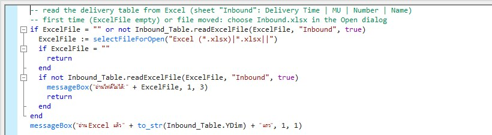
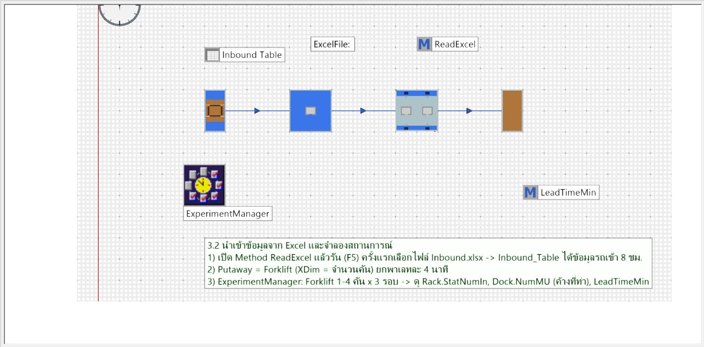
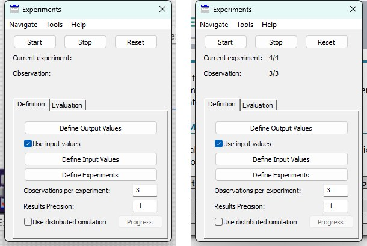
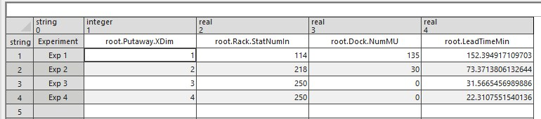

3.2 นำเข้าข้อมูล และจำลองสถานการณ์
3. วิเคราะห์ข้อมูลจากแบบจำลองด้วย AI · ภาคปฏิบัติ
วัตถุประสงค์การเรียนรู้
- อ่านตารางรถเข้าจาก Excel มาเป็น DataTable และให้ Source สร้างพาเลทตามตาราง (Delivery Table) ได้
- ใช้ ParallelStation แทน Forklift หลายคัน และวัดผลด้วย Method ได้
- ตั้ง ExperimentManager ทดลองหลายสถานการณ์ รันซ้ำ และอ่านตารางผลได้
- เลือกจำนวน Forklift ที่พอดีกับงานจากผลการทดลองได้
ข้อมูลจริงของคลังมักอยู่ใน Excel — บทนี้อ่านตารางรถเข้า 8 ชั่วโมงจาก Excel ให้ Source สร้างพาเลทตามเวลาจริง แล้วใช้ ExperimentManager ลองจำนวน Forklift 1–4 คันในครั้งเดียว เพื่อตอบคำถามว่า "ต้องใช้ Forklift กี่คันจึงเก็บของเข้าชั้นได้ทันในกะเดียว"
3_2_Excel_Experiment.spp และ Inbound.xlsx
ในโฟลเดอร์ 2504_AI ของไฟล์ตัวอย่าง · เครื่องต้องมี Microsoft Excel
(Plant Simulation อ่าน .xlsx ผ่าน Excel)
ภาพรวม: 6 ขั้น
| ขั้นที่ | เรื่อง | ได้อะไร |
|---|---|---|
| 1 | เปิดแบบจำลอง | รู้จัก Object ทั้งหมดในเฟรม |
| 2 | ข้อมูลใน Excel | ตารางรถเข้า 8 แถว 250 พาเลท |
| 3 | Source แบบ Delivery Table | Source สร้างพาเลทตามเวลาในตาราง |
| 4 | Method ReadExcel | อ่าน Excel เข้า Inbound_Table |
| 5 | Forklift และค่าที่วัด | Putaway = Forklift, LeadTimeMin = เวลาเฉลี่ย |
| 6 | ExperimentManager | Forklift 1–4 คัน × 3 รอบ → เลือกจำนวนที่พอดี |
ขั้นที่ 1: เปิดแบบจำลอง
- 1เปิด
3_2_Excel_Experiment.sppแล้วเปิดเฟรมModels › Inbound_Model - 2แถวกลาง:
Inbound(Source = รถเข้า) →Dock(Buffer = ท่ารับ จุได้ 500) →Putaway(ParallelStation = Forklift) →Rack(Drain = ขึ้นชั้นแล้ว) - 3แถวบน:
Inbound_Table(ตารางรถเข้า),ExcelFile(ที่อยู่ไฟล์ Excel),ReadExcel(Method อ่าน Excel) - 4แถวล่าง:
ExperimentManagerและLeadTimeMin(Method คิดเวลาเฉลี่ย) — กล่องข้อความสรุปวิธีใช้
ขั้นที่ 2: ข้อมูลใน Excel
เปิด Inbound.xlsx ชีต Inbound — 1 แถว = รถ 1 รอบที่มาถึง (เริ่มกะ 0:00 · ช่วงพักเที่ยง 4:00 รถน้อย):
| Delivery Time | MU | Number | Name |
|---|---|---|---|
| 0:00:00 | .MUs.Part | 20 | Pallet |
| 1:00:00 | .MUs.Part | 35 | Pallet |
| 2:00:00 | .MUs.Part | 50 | Pallet |
| 3:00:00 | .MUs.Part | 40 | Pallet |
| 4:00:00 | .MUs.Part | 10 | Pallet |
| 5:00:00 | .MUs.Part | 45 | Pallet |
| 6:00:00 | .MUs.Part | 30 | Pallet |
| 7:00:00 | .MUs.Part | 20 | Pallet |
รวม 250 พาเลท ใน 8 ชั่วโมง ≈ 31 พาเลท/ชม.
.MUs.Part (มีจุดนำหน้า) — ถ้าเขียนแค่ Part
Plant Simulation อ่านเป็นค่าว่าง และ Source จะไม่สร้างพาเลทเลย (ทดลองแล้วบน 2504)ขั้นที่ 3: Source แบบ Delivery Table
- 1ดับเบิลคลิก
Inbound› แท็บAttributes - 2
Time of Creation= Delivery Table (ไม่ใช่ Interval Adjustable) - 3
Table=Inbound_Table— Source จะสร้าง MU ตามแถวในตารางนี้ - 4ดับเบิลคลิก
Inbound_Table: 4 คอลัมน์ตั้งชนิดข้อมูลไว้แล้ว —time(Delivery Time),object(MU),integer(Number),string(Name)
1:00:00 เป็นเวลา และ .MUs.Part เป็น Object ให้เองขั้นที่ 4: Method ReadExcel — อ่าน Excel เข้าตาราง

- 1ดับเบิลคลิก
ReadExcelดูโค้ด:Inbound_Table.readExcelFile(ExcelFile, "Inbound", true)อ่านชีต Inbound เข้าตาราง - 2ครั้งแรกตัวแปร
ExcelFileยังว่าง โค้ดจึงเปิดหน้าต่าง Open (selectFileForOpen) ให้เลือกInbound.xlsx - 3กด
Run(F5) ในหน้าต่าง Method › เลือกไฟล์ › ขึ้นข้อความ อ่าน Excel แล้ว 8 แถว - 4ไฟล์ที่เลือกถูกจำไว้ใน
ExcelFile— ครั้งต่อไปกด Run ได้เลย
Inbound_Table ไม่ได้เปิด Excel ทุกครั้งที่รัน
— เปลี่ยนตัวเลขใน Excel แล้วต้องรัน ReadExcel อีกรอบขั้นที่ 5: Forklift และค่าที่วัด
- 1ดับเบิลคลิก
Putaway(ParallelStation):X-Dimension= จำนวน Forklift (ในไฟล์ = 2), Y-Dimension = 1 - 2☐
Start Processing When Full— ไม่เลือก ไม่อย่างนั้นทุกช่องต้องมีพาเลทครบก่อน Forklift จึงเริ่มงาน - 3แท็บ Times: ยกพาเลทละ 4 นาที (1 คันเก็บได้ 15 พาเลท/ชม.) · แท็บ Failures: Availability 95 %, MTTR 10 นาที (มีเสียแบบสุ่ม ผลแต่ละรอบจึงต่างกัน)
- 4
LeadTimeMin: เวลาเฉลี่ยตั้งแต่พาเลทมาถึงจนขึ้นชั้น (Rack.StatAvgLifeSpan / 60) — ถ้ายังไม่มีพาเลทเข้า Rack คืน 0 - 5ลองรันครั้งเดียว: กด
Startที่ EventController (จบเองที่ 8 ชม.) แล้วดูจำนวนใน Rack และที่ค้างใน Dock

Rack.StatNumIn)
และ Method ที่คืนตัวเลข — แต่มันเรียก Method ตอนเวลา 0 ด้วย ต้องกันการหารด้วยศูนย์ ไม่อย่างนั้นการทดลองหยุดเงียบ ๆ และตารางผลว่างขั้นที่ 6: ExperimentManager — Forklift 1–4 คัน
ExperimentManager ตั้งไว้แล้วในไฟล์:
| ส่วน | ค่า |
|---|---|
| Define Input Values | root.Putaway.XDim |
| Define Experiments | 4 ชุด: XDim = 1, 2, 3, 4 |
| Define Output Values | root.Rack.StatNumIn (ขึ้นชั้นแล้ว) · root.Dock.NumMU (ค้างที่ท่าตอนจบกะ) · root.LeadTimeMin |
| Observations per experiment | 3 รอบต่อชุด |

- 1ดับเบิลคลิก
ExperimentManager— หน้าต่าง Experiments เปิดขึ้น - 2ถ้าปุ่ม
Startเป็นสีเทา กดResetก่อน - 3กด
Start— รัน 4 ชุด × 3 รอบ = 12 รอบ (เสร็จในไม่กี่วินาที) ขึ้น Current experiment 4/4, Observation 3/3 - 4ดูผล: แท็บ
EvaluationหรือเปิดตารางExperimentManager › Results(ค่าเฉลี่ยของ 3 รอบ)

อ่านผล: ใช้ Forklift กี่คัน
| Forklift | ขึ้นชั้นใน 8 ชม. | ค้างที่ท่า | เวลาเฉลี่ย (นาที) |
|---|---|---|---|
| 1 คัน | 114 | 135 | 152 |
| 2 คัน | 218 | 30 | 73 |
| 3 คัน | 250 | 0 | 32 |
| 4 คัน | 250 | 0 | 22 |
ค่าเฉลี่ย 3 รอบ วัดบน Plant Simulation 2504 · รถเข้าเฉลี่ย 31 พาเลท/ชม. แต่ Forklift 2 คันยกได้แค่ 30 พาเลท/ชม. (และมีเสีย) → 3 คันเก็บได้ครบในกะ · คันที่ 4 ลดเวลาเฉลี่ยจาก 32 เหลือ 22 นาทีแต่ไม่ได้เก็บเพิ่ม — คุ้มค่ารถอีก 1 คันหรือไม่ เป็นคำถามด้านการลงทุนในบท 4.1
ReadExcel + ExperimentManager ใหม่ — 3 คันยังพอไหม
(2) เพิ่มชุด Forklift 5 คันใน Define Experiments (3) เปลี่ยน Observations เป็น 10 แล้วดูว่าค่าเฉลี่ยเปลี่ยนไปเท่าไร